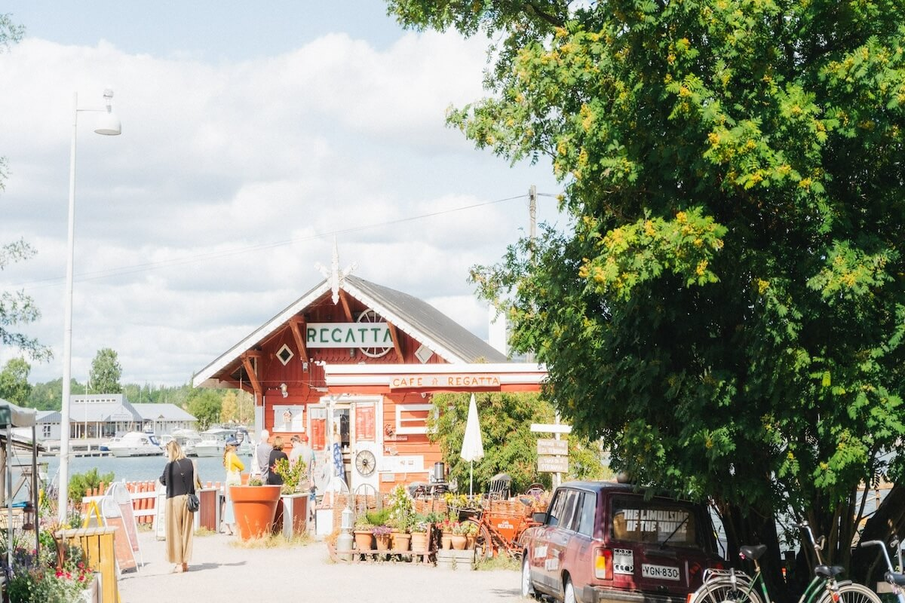
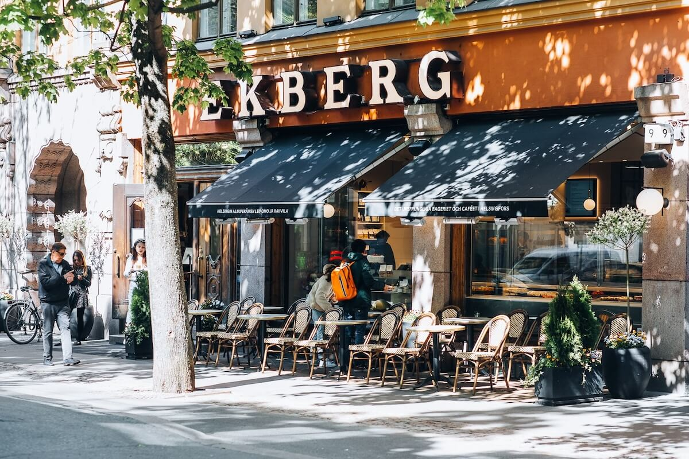
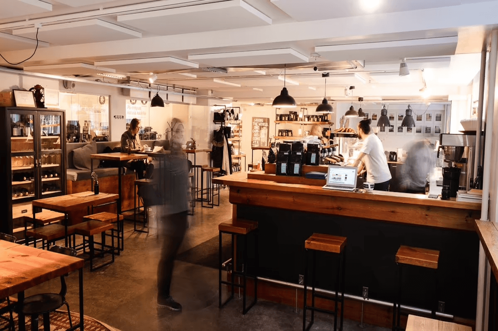
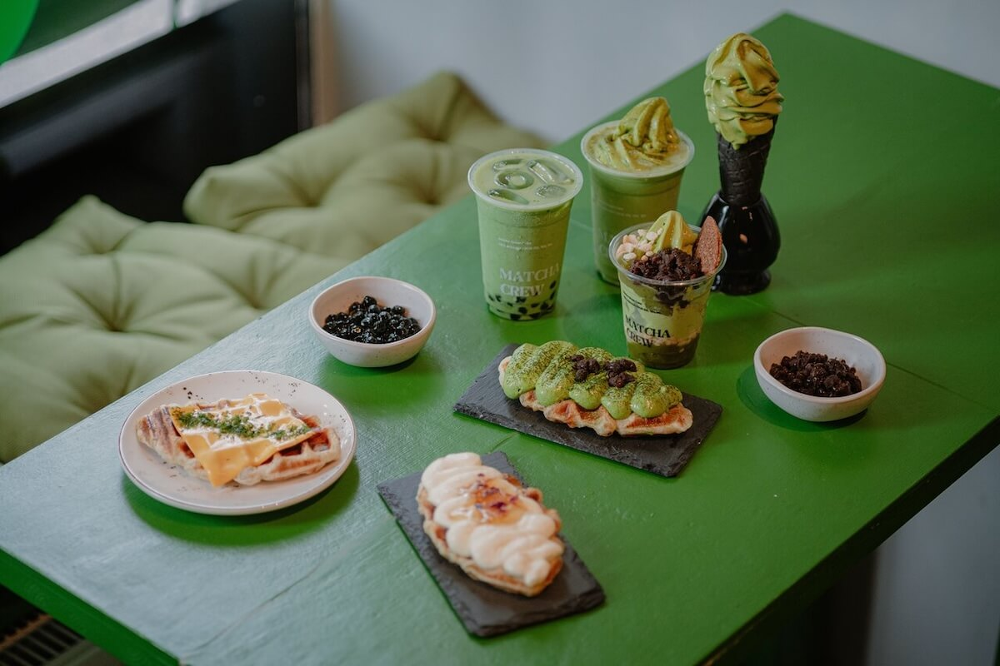

Helsinki's café culture is a blend of Nordic minimalism and cozy tradition. Here are five of the best spots to enjoy coffee, pulla, and the Finnish art of slowing down.
WAY Bakery – A cozy bakery-café and wine bar with two locations in Helsinki (Agricolankatu & Kettutie). They bake their own bread and seasonal pastries, serve all-day brunch, lunch, and natural organic wines. Founded by a team with roots in Michelin-starred cooking and specialty coffee, Way combines quality baking, bold flavors, and a welcoming vibe—perfect for a relaxed, upscale fika break.
Café Regatta – A charming red cottage by the sea in Töölö, established in 2002 (with café roots dating back to the 1950s). Set beside the Sibelius Monument, it offers fresh cinnamon buns, blueberry pie, and the chance to grill sausages by an outdoor fire. In summer, grab a paddleboard or canoe. It's equal parts nostalgic countryside retreat and Helsinki icon.

Ekberg - Finland's oldest café, dating back to 1852. Located along Bulevardi in Kamppi, Ekberg offers a timeless setting with elegant interiors. They're known for traditional treats like Runeberg tortes and classic buns—each crafted with passion by skilled bakers. A must-visit for fans of historic charm and refined fika moments.

Kaffa Roastery – An award-winning roastery and café in Punavuori, Kaffa Roastery brings specialty coffee culture to Helsinki. Their mission: "Why drink the most coffee when we can drink the best?" They roast ethically sourced beans on-site, offer rotating espresso, drip, and pour-over selections, and even sell house-roasted blends like "Herra Korppi" and "AI-conic." It's the place for coffee lovers seeking quality and innovation.

Matcha Crew - A modern matcha specialist, Matcha Crew opened in Helsinki in 2023 and focuses on authentic Japanese matcha, with a Nordic twist. They import premium, matcha directly from Japan and have many flavors of drinks you can try out. At the cozy tea bar, you'll find matcha lattes, iced matcha beverages, and even matcha-infused pastries and baked goods. Ideal for anyone wanting a vibrant, wellness-focused fika experience.

Each of these Helsinki cafés offers a unique taste of the city's vibrant coffee scene. Don't miss the pulla or a slice of berry pie with your brew!